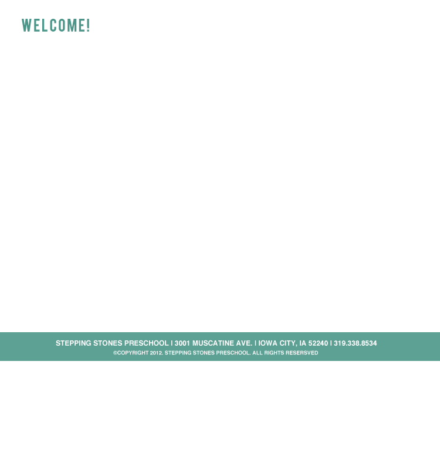

At Stepping Stones Preschool students develop the skills they need for Kindergarten while having fun LEARNING! These include the most important independent skills Kindergarten teachers say kids should know.
Pick the program that is best for your child:
CLASS AGE
2 DAYS (T/TH) 3-4 YEARS
3 DAYS (M/W/F) 4-5 YEARS
5 DAYS (M-F) PRE-KINDERGARTEN
All classes offered are half day, mornings.
Special Features: Field Trips • Yoga • Music/Drama •
Special Guests • Playtime in Large Indoor Gym
MWF program also includes:
Spanish • Sign Language • Kindergarten Readiness
Stepping Stones Preschool is affiliated with the Iowa City Community School District and the State Wide Voluntary Preschool Program (SWVPP). Tuition for qualifying 4-year-olds is supplemented by SWVPP and so offered at a discounted rate.
Stepping Stones Preschool is a non-profit corporation, licensed by the state of Iowa. We are non-religiously affiliated and do not discriminate with regard to race, gender, religious creed, or national origin.